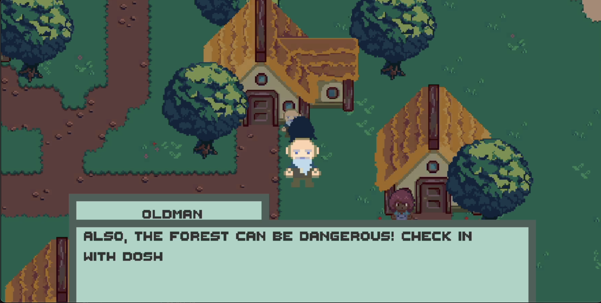
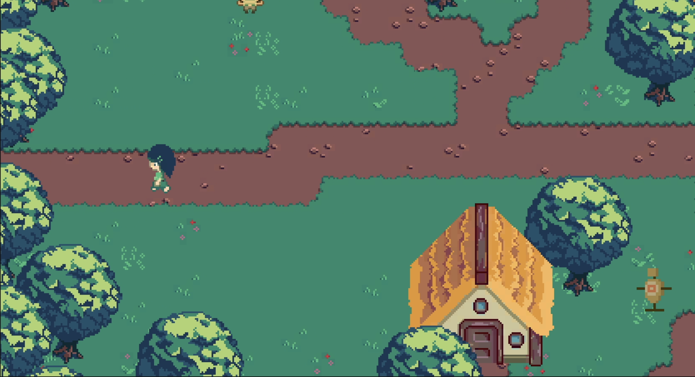
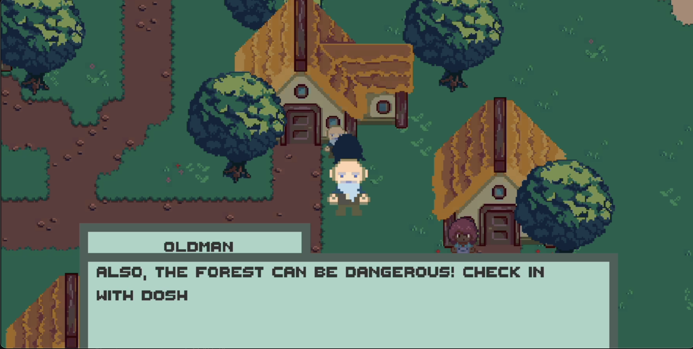
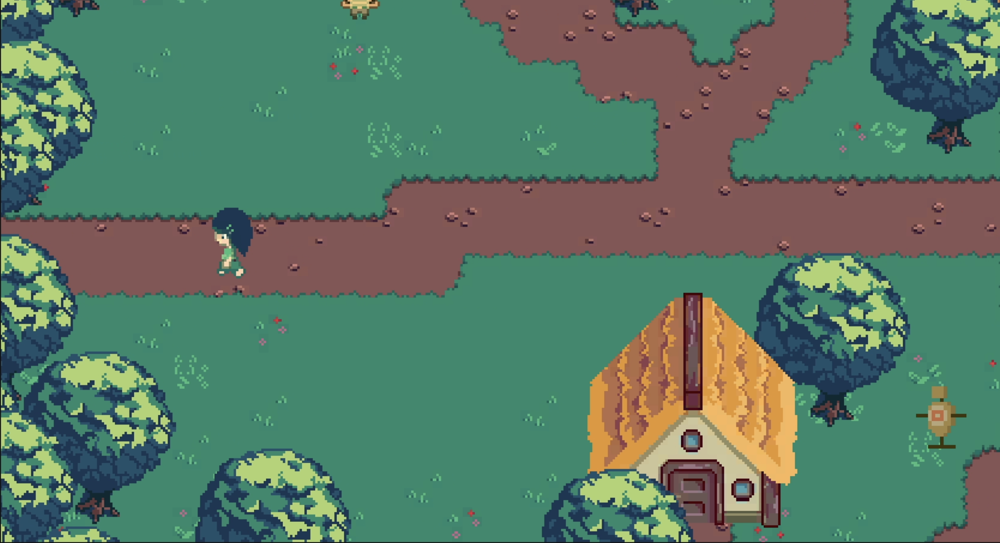

WolverineSoft Project Quest
A 2D sandbox game following a druid in a transitioning town who, distrusted but not hated, arms villagers against a hero-turned-final boss seeking forest resources for a kingdom's cruise ship.
- Contributed to UI/UX mechanics, menu functionality, bug monitoring, and game quality for Project Quest.
- Managed collaborative efforts and version control using Git within the team.
- Utilized Unity and C# scripts in Visual Studio to develop and debug game elements.
- Collaborated with team members using Confluence and Jira throughout game development.
- Unity Game Engine
- Bitbucket
- Agile/Atlassian Softwares
- UI/UX Game Implementations
 


